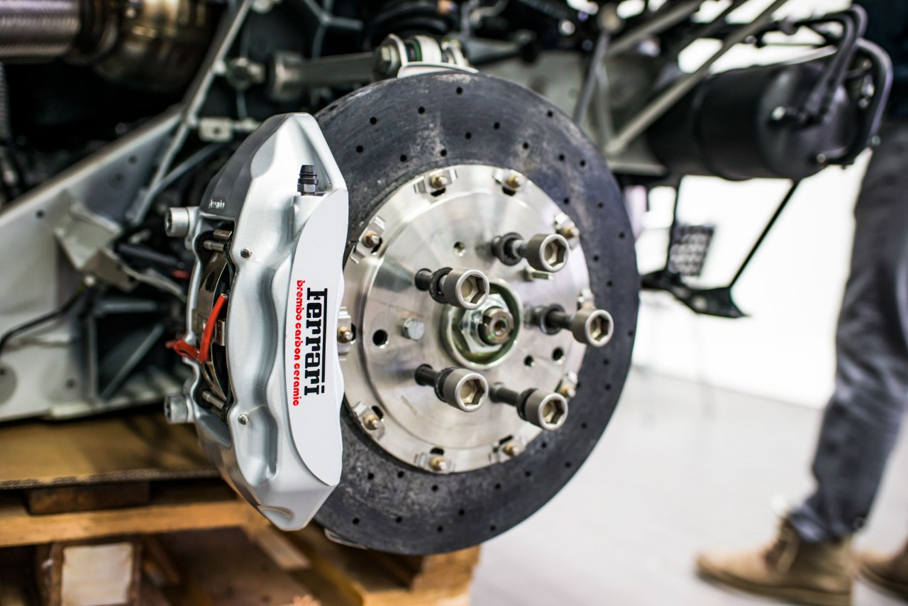

Home / Brakes
Brake Pads vs Rotors: When to Replace Each (and Both)
Quick answer
Replace pads when the friction material is down to about 3 mm, or when they squeal, grind or trigger the wear light. Replace discs when they are grooved, lipped, cracked, overheated or below the minimum thickness stamped on them. Always change them in pairs on the same axle, and fit new pads only to smooth discs.

Pads are the part that wears fastest. The discs, also called rotors, last longer, but not forever. Here's how to tell what needs replacing and when.
I never judge brakes by the pads alone. I've seen cars where the pads still had some material left but the rotors were already heavily worn or deeply grooved, so I always check both before deciding what to replace.
Signs your pads are worn
- A high-pitched squeal from the wear indicator, a small metal tab built into many pads
- A grinding noise, which can mean the pad material is gone and metal is on metal
- A brake wear warning light, on cars with wear sensors
- Less stopping power or a pedal that sits lower
- Thin pad material when you look through the wheel spokes
A common rule of thumb is to replace pads when the friction material is down to about 3 mm (roughly 1/8 inch). New pads are usually around 10 to 12 mm.
Signs your discs need attention
- Pulsing or shaking through the pedal or steering wheel when braking
- Deep grooves you can feel with a fingernail
- A raised lip around the outer edge
- Blue or dark patches from overheating
- Cracks, especially running from the edge toward the middle
- Thickness below the minimum, stamped on the disc or listed in the manual
Safety note. A cracked disc or one below minimum thickness should be replaced, not reused. Brakes are a safety system. If you're unsure, have a professional measure them.
If you decide to do the job yourself, How to Change Brake Pads Yourself walks through the steps. A harsh grinding noise is a different story, covered in Grinding Noise When Braking.
Should you replace both together?
Not always. You can fit new pads on discs that are smooth, thick enough and not scored. But many people replace both together, because:
- New pads bed in better on a fresh, flat disc surface.
- Worn discs often cause noise and uneven wear on new pads.
- It saves doing the same job twice a short time later.
Discs and pads should always be changed in pairs on the same axle, left and right together. Mixing a new and a worn side can make the car pull under braking.
How to measure
- Lift the car safely and remove the wheel.
- Look at the pad thickness, including the backing plate, from the side.
- Measure the disc with a micrometer or calipers at several points around the face.
- Compare with the minimum thickness in your manual or stamped on the disc.
Can discs be machined?
Sometimes a disc can be skimmed flat, but only if it will still be above minimum thickness afterwards. With cheap replacement discs, many people find new ones simpler.
Front and rear wear differently
Front brakes do most of the work, so front pads wear faster than the rear on most cars. Check both when you do a job.
New pads on worn discs are a common reason for noise, so see Brakes Squealing After New Pads? Pulsing through the pedal is explained in Why Do My Brakes Vibrate When Braking? Old fluid also affects pedal feel; see How Often to Change Brake Fluid.
Quick decision guide
- Pads thin, discs smooth and thick: pads only
- Pads thin, discs grooved, lipped or pulsing: pads and discs
- Disc cracked or below minimum: replace discs
- Not sure: have them measured
FAQ
How do I know when brake pads need replacing?
A squeal from the wear indicator, a grinding noise, a warning light, a pedal that sits lower or friction material down to about 3 mm are the usual signs.
Can I replace just the pads and keep the discs?
Yes, if the discs are smooth, above minimum thickness and not cracked or lipped. Grooved, lipped or pulsing discs should be replaced with the pads.
How long do brake pads and discs last?
It depends on the car and your driving style. Pads usually wear out first, and discs often last through more than one set of pads. Check both at every service.
Do I have to replace discs in pairs?
Yes. Replace discs and pads in pairs on the same axle to avoid uneven braking.
This guide is general information based on personal experience, not professional advice. Check your own vehicle's manual for exact specs and read the disclaimer before starting any job.